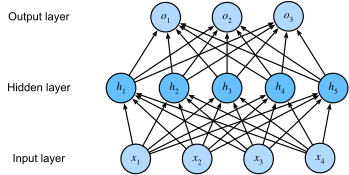

反向传播#
Note
正向传播即计算输出
反向传播即使用链式法则从输出到输入计算梯度
正向传播#
搭建神经网络就像是搭乐高积木:

我们用中括号标识层，比如说在上图中， $[0]$ 标识输入层, $[1]$ 标识隐藏层, $[2]$ 标识输出层
$\mathbf{a}^{[l]}$ 表示 $l$ 层的输出, 并令 $\mathbf{a}^{[0]} = x$
$\mathbf{z}^{[l]}$ 表示 $l$ 层的仿射结果
$g^{[l]}$ 表示 $l$ 层的激活函数
正向传播即:
$$\mathbf{z}^{[l]} = \mathbf{W}^{[l]}\mathbf{a}^{[l-1]} + \mathbf{b}^{[l]}$$
$$\mathbf{a}^{[l]} = g^{[l]}(\mathbf{z}^{[l]})$$
其中 $\mathbf{W}^{[l]} \in \mathbb{R}^{d[l] \times d[l-1]}$, $\mathbf{b}^{[l]} \in \mathbb{R}^{d[l]}$.
预备知识#
1.假设在正向传播中 $\mathbf{x} \to \mathbf{y} \to L$, 其中 $L \in \mathbb{R}$是损失， $\mathbf{x} \in \mathbb{R}^{n}$, $\mathbf{y} \in \mathbb{R} ^{m}$ 比 $\mathbf{x}$ 更靠近输出层:
$$ \frac{\partial L}{\partial \mathbf{y}} = \begin{bmatrix} \frac{\partial L}{\partial y_{1}}, … ,\frac{\partial L}{\partial y_{m}} \end{bmatrix}^T \quad , \quad \frac{\partial L}{\partial \mathbf{x}} = \begin{bmatrix} \frac{\partial L}{\partial x_{1}}, … ,\frac{\partial L}{\partial x_{n}} \end{bmatrix}^{T} $$
使用全微分公式:
$$ \frac{\partial L}{\partial x_{k}} = \sum_{j=1}^{m}\frac{\partial L}{\partial y_{j}}\frac{\partial y_{j}}{\partial x_{k}} $$
从而我们可以计算 $\frac{\partial L}{\partial \mathbf{x}}$ 和 $\frac{\partial L}{\partial \mathbf{y}}$ 的关系:
$$ \frac{\partial L}{\partial \mathbf{x}} = (\frac{\partial \mathbf{y}}{\partial \mathbf{x}})^{T}\frac{\partial L}{\partial \mathbf{y}} $$
这里 $\frac{\partial \mathbf{y}}{\partial \mathbf{x}}$ 是 jacobian 矩阵.
2.矩阵乘法的 jacobian 矩阵，这很容易验证:
$$\frac{\partial \mathbf{M}\mathbf{x}}{\partial \mathbf{x}}=\mathbf{M}$$
反向传播#
recall 梯度下降公式:
$$\mathbf{W}^{[l]} = \mathbf{W}^{[l]} - \alpha\frac{\partial{L}}{\partial{\mathbf{W}^{[l]}}}$$
$$\mathbf{b}^{[l]} = \mathbf{b}^{[l]} - \alpha\frac{\partial{L}}{\partial{\mathbf{b}^{[l]}}}$$
我们需要计算 $L$ 对各参数的梯度
分三步走:
1.计算输出层的梯度 $\frac{\partial L}{\partial \mathbf{z}^{[N]}}$ :
$$ \frac{\partial L}{\partial \mathbf{z}^{[N]}} = (\frac{\partial \mathbf{a}^{[N]}}{\partial \mathbf{z}^{[N]}})^{T}\frac{\partial L}{\partial \mathbf{a}^{[L]}} $$
2.计算隐藏层的梯度 $\frac{\partial L}{\partial \mathbf{z}^{[l]}}, l=N-1,…,1$:
$$\mathbf{z}^{[l + 1]} = \mathbf{W}^{[l + 1]}\mathbf{a}^{[l]} + \mathbf{b}^{[l + 1]}$$
通过前面的预备知识我们知道:
$$ \frac{\partial L}{\partial \mathbf{a}^{[l]}} = (\frac{\partial \mathbf{z}^{[l+1]}}{\partial \mathbf{a}^{[l]}})^{T}\frac{\partial L}{\partial \mathbf{z}^{[l+1]}} = (\mathbf{W}^{[l+1]})^{T}\frac{\partial L}{\partial \mathbf{z}^{[l+1]}} $$
注意到隐藏层的激活函数 $g^{[l]}$ 不会相互依赖，因此:
$$\frac{\partial L}{\partial \mathbf{z}^{[l]}} = \frac{\partial L}{\partial \mathbf{a}^{[l]}} \odot {g^{[l]}}’(\mathbf{z}^{[l]})$$
结合起来:
$$\frac{\partial L}{\partial \mathbf{z}^{[l]}} = (\mathbf{W}^{[l+1]})^{T}\frac{\partial L}{\partial \mathbf{z}^{[l+1]}} \odot {g^{[l]}}’(\mathbf{z}^{[l]})$$
3.计算参数的梯度 $\frac{\partial L}{\partial \mathbf{W}^{[l]}}$ 和 $\frac{\partial L}{\partial \mathbf{b}^{[l]}}$ for $l=N,…,1$:
$$\mathbf{z}^{[l]} = \mathbf{W}^{[l]}\mathbf{a}^{[l - 1]} + \mathbf{b}^{[l]}$$
通过链式法则可以得到:
$$\frac{\partial L}{\partial \mathbf{W}^{[l]}} = \frac{\partial L}{\partial \mathbf{z}^{[l]}}(\mathbf{a}^{[l - 1]})^{T}$$
$$\frac{\partial L}{\partial \mathbf{b}^{[l]}}=\frac{\partial L}{\partial \mathbf{z}^{[l]}}$$